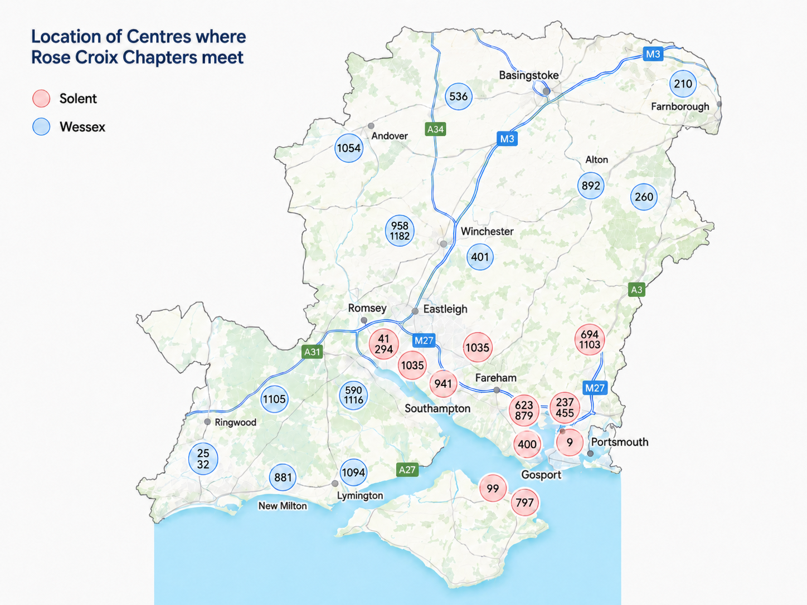

Districts
Welcome to the website for Rose Croix in Hampshire & Isle of Wight. Whether you are an existing member of the Order or someone wishing to learn more about Rose Croix we hope you will find this site useful.
Hampshire & Isle of Wight is covered by two districts; Solent and Wessex. Each district is overseen by an Inspector General appointed by the Supreme Council. Each district has a number of chapters, the map below gives an indication of where these meet.
